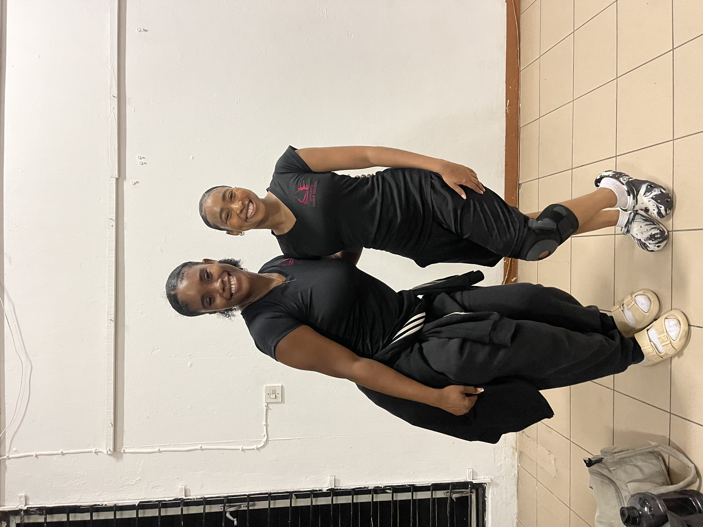

The Art of Dance: A Journey of Self-Expression
Dancing has been an essential part of my life from a young age, serving as a vital form of self-expression. Each style—hip hop, dancehall, jazz, and folk—offers a unique rhythm and energy that resonates with me. Hip hop allows me to express my creativity and connect with its vibrant culture, while dancehall brings joy and a sense of freedom. Jazz challenges me to explore new techniques through intricate footwork, and folk dance connects me to my roots and the traditions of storytelling through movement. Each style provides a valuable opportunity to express emotions and connect with others on the dance floor.
I’ve had supportive mentors throughout my dance journey, which has improved my skills and appreciation for the art. Their guidance has motivated me to push my boundaries and explore new styles. As I continue to dance on the side, I look forward to performances and connecting with fellow dancers. Dancing is more than just a hobby; it’s a fulfilling part of my life that I’m excited to continue.